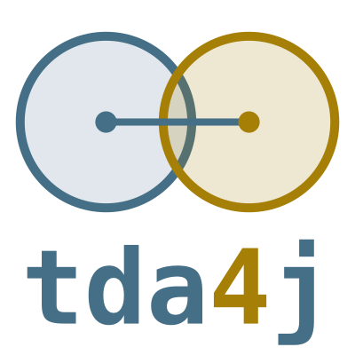

The TDA4j library implements persistent homology and related techniques from computational and applied topology, in a library designed for ease of use, ease of access from Matlab and java-based systems, and ease of extensions for further research projects and approaches.
The library is based on previous libraries from the Computational Topology workgroup at Stanford University.
For persistent homology and its capabilities, we recommend the book Topological Data Analysis with Applications by Gunnar Carlsson and Mikael Vejdemo-Johansson, and the survey article Topology and Data by Gunnar Carlsson
On this site we include a fully compiled ScalaDoc org.appliedtopology.tda4j documentation.
Vision and goals
TDA4j exists to make persistent (co)homology computations that are correct and inspectable first, fast second — not the other way around. A handful of commitments run through essentially every engine and construction in this library, and they explain a lot of choices that might otherwise look like unnecessary extra work:
- Generic over coefficients, always. Every homology engine here is generic over the coefficient field, not hardcoded to
Z/2the way it's tempting to be for a first implementation. This isn't cosmetic:Z/2provably hides sign errors that a signed field (Double, or an odd primeFp) exposes, and this codebase treats agreement across both as a real correctness check that's run routinely, not as a nice-to-have. - Representatives, not just barcodes. Every engine returns a genuine chain witnessing each bar, not only a birth/death pair. A barcode alone can't answer "which part of my data does this feature correspond to"; a representative cycle can. An optimization that can't produce one is treated as incomplete, not as a reasonable speed/completeness tradeoff — this is a standing, foundational design principle, not a per-engine judgment call.
- Cross-validated by construction, not by convention. TDA4j deliberately keeps independent implementations of the same computation side by side — four persistent homology engines, two independent Delaunay/alpha-complex backends, half a dozen Vietoris-Rips streaming strategies — and checks them against each other on hand-derived and randomized fixtures rather than trusting a single implementation and hoping it's right. A bug or fix found in one engine is never assumed to carry over to the others. This costs more engineering time up front than committing to one "best" implementation; that cost is accepted deliberately, because agreement between independently-derived engines is real evidence in a way that internal consistency of a single engine never can be.
- Honest, measured performance claims. Where this library is genuinely competitive, that's stated with real numbers; where it isn't, that's stated too, not glossed over. The packed Ripser engine's own documentation states plainly that it remains ~19–64x behind real
ripser.cpponsphere3_*benchmarks, with the gap growing withn; the alpha-complex DQP backend's paper-level benchmarks against Ripser and qhull are reported as mixed, because they are. Every performance claim here is expected to survive an isolated A/B measurement before it's written down anywhere, and an unconfirmed effect is reported as unconfirmed rather than asserted. - A usable surface beyond Scala. The MATLAB-facing facade (
matlab.TDA4j) and the standalone CLI executable exist so the library is directly usable by people who will never write a line of Scala, not as an afterthought bolted onto an internal API.
What TDA4j deliberately does not do
- It does not chase raw throughput as the primary goal. Where a faster, more mature external tool exists for a specific job (
ripser.cppon plain Vietoris-Rips, qhull-based Delaunay at low ambient dimension), TDA4j does not try to win that benchmark outright. Its own value is genericity (anyField, several cell types), representatives on every bar, and cross-validated correctness — not being the fastest tool for one narrow job. - It does not implement every optimization in the literature. Ripser's own "emergent pairs" (Def 3.11) are a known, deliberately-skipped optimization; Cavanna-Jahanseir-Sheehy's own faster
O(n log n)neighbor search for the sparse Vietoris-Rips construction is deliberately not implemented here (this library's ownO(n²)version produces a smaller complex to reduce, which is the part that was slow, rather than a faster complex to build, which wasn't). Skipping a known optimization is a recorded decision with its own reasoning, not an oversight to eventually get around to. - It does not treat "the one fastest engine" as a target to converge on. Keeping multiple independent engines for the same computation is a permanent architectural choice, not technical debt awaiting consolidation — the redundancy is the point.
- It does not guess at unverified file formats. A format with no primary source to check an implementation against (Perseus's own simplicial toplex format, PHAT, sparse triplet distance matrices) is left unimplemented rather than shipped as a plausible-but-unverified parser; a wrong parser is worse than none.
- It does not force every construction into one shared geometric abstraction. Alpha complexes and the Vietoris-Rips/Ripser machinery are kept as separate, only minimally-interacting parts of the codebase by deliberate choice, rather than unified into a common framework where the fit would be awkward for both.
- It is not (yet) a general algebraic-topology toolkit. Simplicial sets, for instance, have real support for filtrations and homology but no MATLAB/CLI surface yet, and no bar-construction or classifying-space machinery — genuinely useful future directions, but currently out of scope rather than silently missing.